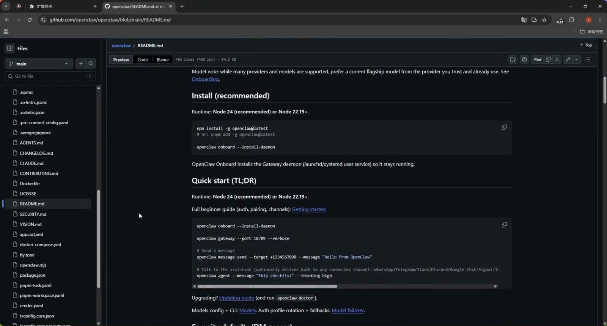
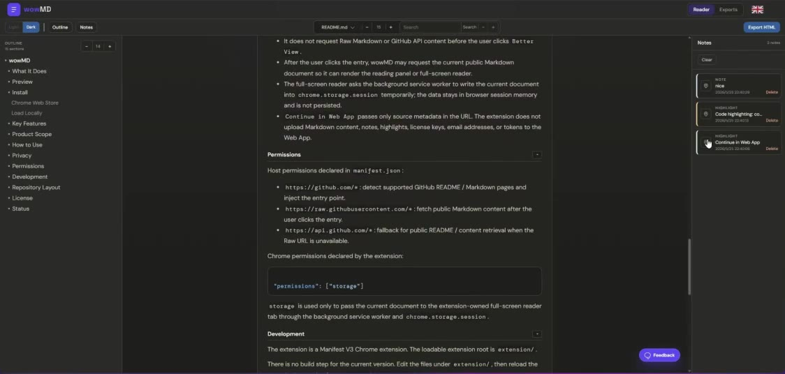

Markdown-Reader Einstieg
Lange Markdown-Dokumente, endlich lesbar.
Wähle, wo du liest: GitHub-Seiten oder lokale Markdown-Dateien.


Kostenlose Erweiterung für GitHub. Pro-Arbeitsbereich für lokale Dateien.


Markdown-Reader Einstieg
Wähle, wo du liest: GitHub-Seiten oder lokale Markdown-Dateien.


Kostenlose Erweiterung für GitHub. Pro-Arbeitsbereich für lokale Dateien.